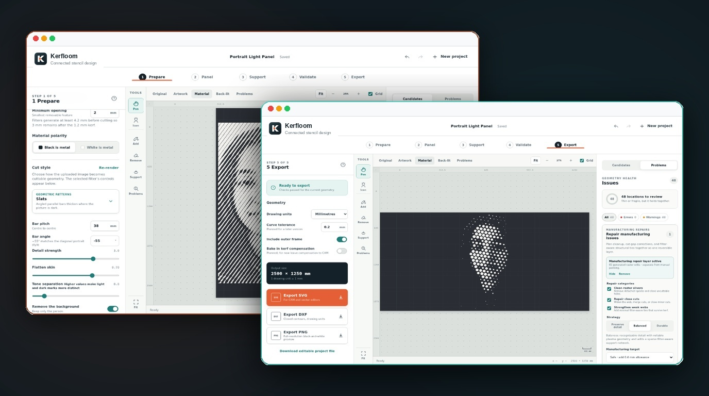

Entre bastidores
PWA Invite Console
Una pequeña consola para gestionar invitaciones y dispositivos en aplicaciones web privadas.
Un pequeño asistente de actualización con respaldo sin conexión para recursos visitados anteriormente.

Un pequeño asistente de actualización mediante service worker para aplicaciones web, con un aviso visible y protección del trabajo sin terminar.
Copiar sw.js, sw-update.js y pwa-update.js en la raíz web de una aplicación y conéctelos. No hay ningún paso de compilación de frontend ni dependencia de paquetes. El ZIP también tiene un ejemplo y archivos de integración de servidor opcionales.
Un nuevo service worker se activa inmediatamente. Las páginas visibles pueden aplazar la recarga mientras haya trabajo sin terminar; los clientes que no responden se recargan tras un breve periodo de espera. Adapta la política de caché del ejemplo antes de utilizarla con contenido privado.
isBusy): Las páginas visibles que responden pueden aplazar la recarga mientras haya cambios sin terminar; las aplicaciones deben guardar por separado los borradores importantes.Una pequeña consola para gestionar invitaciones y dispositivos en aplicaciones web privadas.

Convierte una fotografía en patrones conectados para recortarlos en metal.

Un pequeño planeta en tu bolsillo. Explora la Tierra con datos astronómicos actuales y de la NASA.